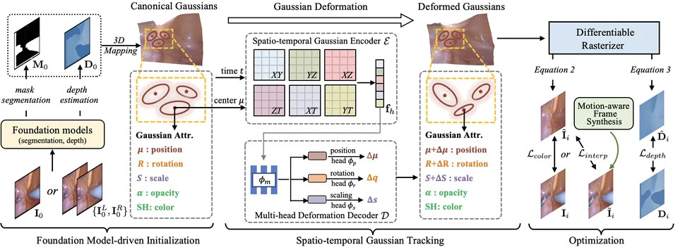
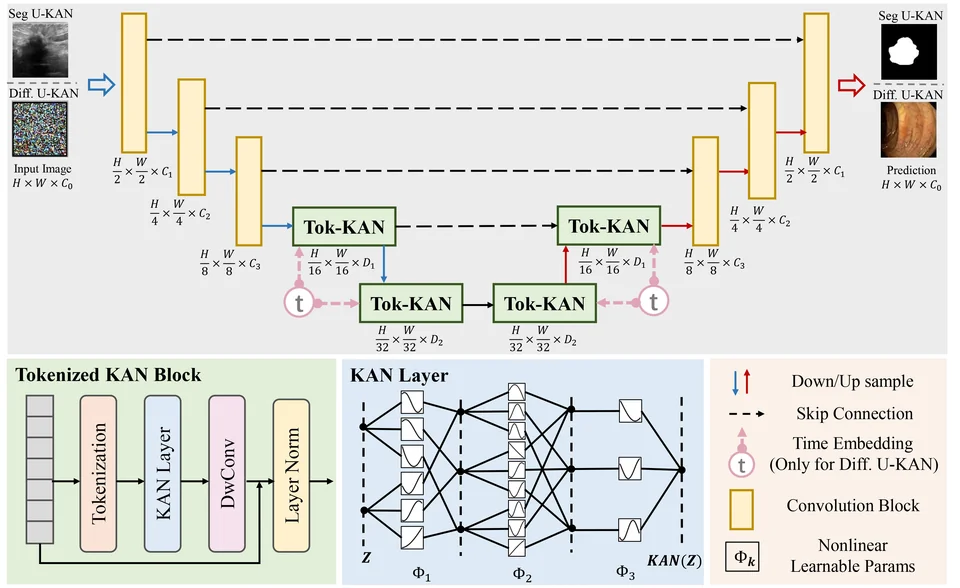

Hy-Nomas: Towards Free-Form Interactive World Generation
Technical Report, 2026
An interactive world generation model that supports free-form, multi-turn text instructions and camera control.
I am a Researcher at Tencent HY, working with Dr. Heng Wang in the Video World Foundation Model Team. Previously, I received my Ph.D. in Electronic Engineering from the Chinese University of Hong Kong, advised by Prof. Yixuan Yuan. During my Ph.D., I have been fortunate to work with Dr. Zhenwei Wang and Dr. Tengfei Wang at the Tencent HY 3D.
My research focuses on video generation, world models, and 3D vision, with an emphasis on building practical products for generation and understanding in real-world applications.
I'm always open to related discussions and collaborations. If you are interested in my work, please feel free to contact me.
Technical Report, 2026
An interactive world generation model that supports free-form, multi-turn text instructions and camera control.
Technical Report, 2025
A 3D world reconstruction framework capable of producing immersive, explorable, and interactive scenes from arbitrary-view inputs.
* Equal contribution
ICML 2026
A universal 3D reconstruction framework capable of processing diverse input modalities and generating various output representations.
CVPR 2025
A generalizable 3D Gaussian Splatting approach from monocular depth foundation models.

IEEE TMI 2025
The first work to apply 3D Gaussian Splatting for dynamic (4D) endoscopic reconstruction, guided by foundation models.

AAAI 2025
Introducing Kolmogorov-Arnold Networks (KANs) as a strong backbone for medical image segmentation and generation.
The Chinese University of Hong Kong (CUHK)
Advisor: Prof. Yixuan Yuan
Huazhong University of Science and Technology (HUST)
Curiosity and enthusiasm shape both my research and my life. I'm also passionate about basketball🏀, swimming🏊♂️, table tennis🏓, and badminton🏸.